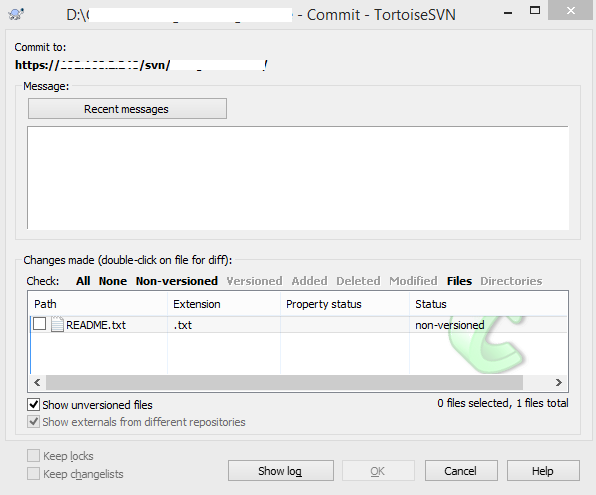
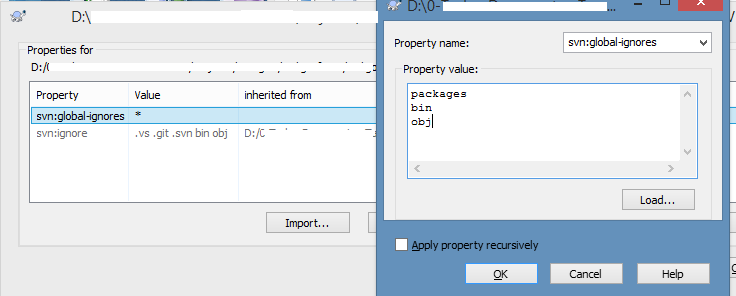

O TortoiseSVN é uma ferramenta que oferece uma interface para gerenciar o SVN. Ao commitar novos arquivos (não versionados), em geral você precisa apenas selecionar a opção "Show unversioned files" no canto inferior esquerdo da tela.
No entanto, quando comecei a trabalhar em um projeto em C#, os arquivos não versionados não apareciam. Logo, era preciso localizar o arquivo, clicar com o botão direito e ir em TortoiseSVN / Add para que o arquivo fosse adicionado e listado na tela de commit. Uma tarefa trabalhosa e sujeita a erros. Várias vezes novos arquivos não eram commitados causando erros de compilação.
Para o SNV ignorar ou não os novos arquivos automaticamente, é possível configurar, por pasta, quais arquivos serão ignorados. Na raiz do projeto, clique com o botão direito e vá em TortoiseSVN / Properties. Dê um duplo clique na propriedade svn:global-ignores. Se seu valor for * o SVN ignora todos os novos aquivos.
Alguns arquivos realmente não devem ser commitados, como aqueles gerados na compilação. Você pode adicionar apenas aqueles que deseja-se ignorar, por exemplo: packages, bin, obj. Adicionando cada um em uma linha. Você pode também selecionar "Apply property recursively" para modificar todas as suas subpastas. Agora é só Commitar as alterações.
